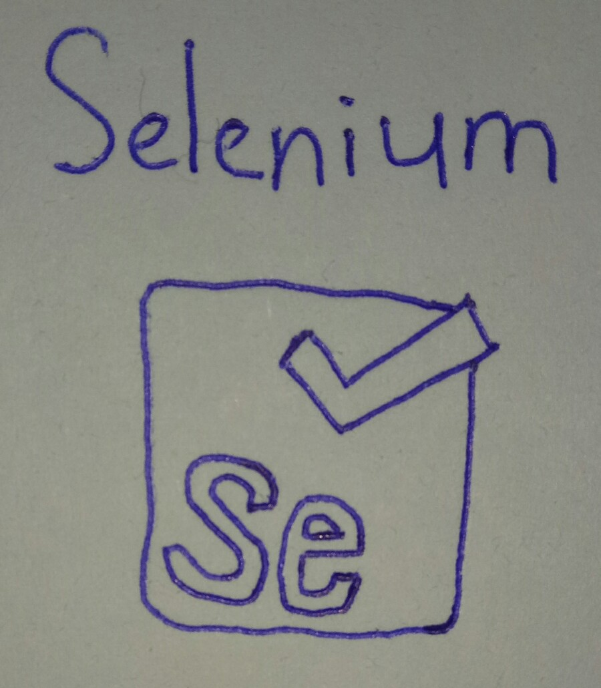

Automated testing is turn the manual test into auto test. Automated testing can save time, man power and hardware resource， improve testing efficiency and avoid the human error at the same time. Selenium is a automated testing tools, it can test whether the code is compatible with the browser, and can try codes function.
Everyone browse the website have user-agent, user-agent have details of device about user. User-agent will submit details of device, when user visit the website, different device will have different experience, example computer and smartphone are different screen resolution, user-agent will according to screen resolution display different size web page. Except browser have user-agent, Play Station Portable, Wii and others same have user-agent.